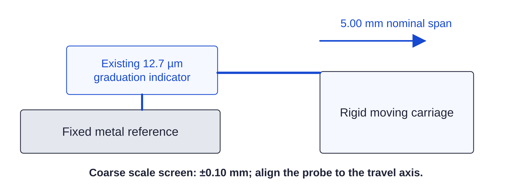

Dry commissioning / nominal geometry161 / 179
Screen the three linear scales
The existing 12.7 µm-graduation indicator can detect a gross lead/ratio error over 5 mm. It does not establish micrometer positioning accuracy.
AddNo new parts
Tools / setupExisting indicator on fixed metal frame · supported load · loaded image

- Align the probe to a rigid carriage face at least 5 mm from a switch; set it near midrange and note a fresh zero.
- From the actual central datum, issue the +5 mm target below. The client divides it into ≤0.1 mm segments.
- Record the actual total span and stick-slip, then restore 0. Repeat from the same approach direction on X, Y and Z.
- Record the indicator setup repeat readings and uncertainty limit.
target X 5 1000 target X 0 1000
Ready when
The coarse 5.00 mm span is within ±0.10 mm. At 85 mm half-travel this uses 1.70 mm of the 4 mm soft-to-switch margin. An outside result requires lead/ratio, loose-pulley or step-loss diagnosis. Restrict travel if the combined actual uncertainty/stop budget does not fit.
Remaining 2.30 mm must cover independently bounded datum error, spatial variation/backlash/compliance, measurement uncertainty and stop excursion. A local span alone never qualifies full travel.